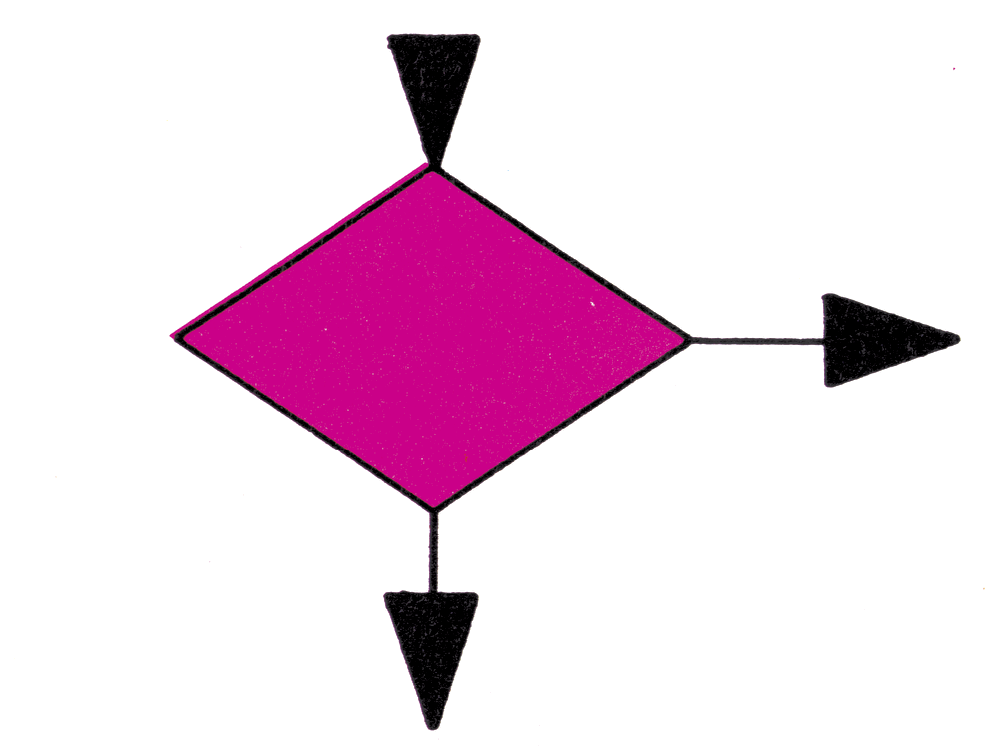
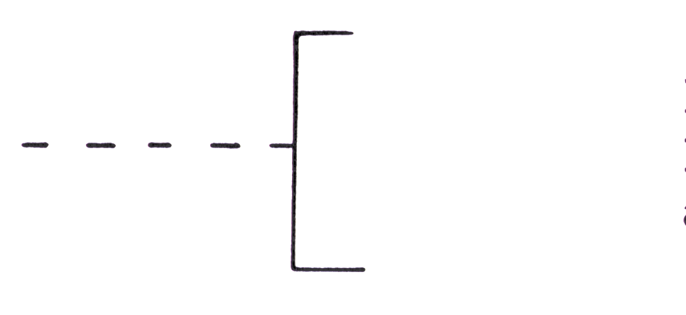

Tips für den Umgang mit Sinnbildern von Programmablaufplänen
Für jemanden, der noch nichts mit Programmablaufplänen zu tun hatte, ist es meist sehr schwer, seine Ideen und Programme in Form von Programmablaufplänen darzustellen. Deshalb nun einige Tips, für den Umgang mit Programmablaufplänen.
| OPERATION, allgemein Insbesondere für Operationen die im folgenden nicht besonders aufgeführt sind. z.R: Berechnungen, Zuweisungen, Dimensionierungen, usw. |
|
|  | VERZWEIGUNG Ein Sonderfall der Verzweigung ist der programmierte Schalter. |
| UNTERPROGRAMM Ein Unterprogramm muß nur einmal näher dargestellt werden. Im PAP genügt dann der Hinweis wann welches Unterprogramm eingesetzt wird. |
|
| PROGRAMMODIFIKATION z.R das SteUen von programmierten Schaltern oder das Ändem von Indexregistern. |
|
| OPERATION VON HAND z.R Formularwechsel, Bandwechsel, Eingriff des Bedieners bei der Prozeßsteuerung. |
|
| EINGABE, AUSGABE Ob es sich um eine maschinelle oder manuelle Einoder Ausgabe handelt, soll aus der Beschriftung hervorgehen. |
|
| ABLAUFLINIE, ZUSAMMENFÜHRUNG Vorzugsrichtungen sind: von oben nach unten, und von links nach rechts. Abweichungen können durch Pfeile deutlich gemacht werden. Zwei sich kreuzende Ablauflinien bedeuten keine Zusammenführung. |
|
| ÜBERGANGSSTELLE Der Übergang kann von mehreren Stellen aus, aber nur zu einer Stelle hin erfolgen. |
|
| GRENZSTELLE Für A kann z.B Beginn, Ende, Zwischenhalt eingeschrieben werden. |
|
|  | BEMERKUNG Dieses Sinnbild kann an jedes Sinnbild dieser Norm angefügt werden. |
-
Operation: Dieses Sinnbild wird für Berechnungen, Zuweisungen und so weiter verwendet, ausgenommen für diejenigen Operationen, für die ein spezielles Sinnbild vorhanden ist.
-
Verzweigung (Entscheidung): Das Sinnbild hat einen Eingang und zwei Ausgänge. Je nachdem ob die Bedingung, die im Sinnbild angegeben ist, erfüllt ist, wird der Programmlauf bei dem einen oder anderen Ausgang fortgesetzt. Man sollte die Ausgänge mit ja oder nein (+ oder —) kennzeichnen, um zu verdeutlichen, welcher Ausgang benutzt wird, wenn die Bedingung erfüllt ist oder nicht.
-
Unterprogramm: Häufig benutzte Programmteile, die an verschiedenen Stellen des Programms benötigt werden, führt man meist als Unterprogramme aus. Im Programmablaufplan wird immer dann das Zeichen für ein bestimmtes Unterprogramm eingesetzt, wenn es benötigt wird. Wie Unterprogramme im einzelnen aussehen braucht man nur einmal gesondert aufzuführen.
-
Programmodifikation: In vielen Programmen taucht das Bedürfnis auf, bestimmte Veränderungen an Indexregistern vorzunehmen, zum Beispiel: Abschalten der Tastatur oder Wahl eines anderen Zeichensatzes. Diese Veränderungen werden in Basic meist durch Poke-Befehle bewirkt. Am Sinnbild sollte deshalb ein sehr ausführlicher Text angebracht sein, aus dem deutlich hervorgeht, was ein derartiger Eingriff im Einzelnen bewirkt.
-
Operation von Hand: Bei manchen Programmen ist es notwendig, daß der Bediener persönlich eingreift. Am Sinnbild sollte deshalb genau erläutert werden, welche Tätigkeiten vom Bediener ausgeführt werden müssen.
-
Eingabe, Ausgabe: Aus der Beschriftung des Sinnbildes sollte außerdem deutlich hervorgehen, was durch wen und welche Geräte ein- beziehungsweise ausgegeben werden soll.
-
Ablauflinie: Die Ablauflinie ist ein einfacher durchgehender Strich, der die Sinnbilder verbindet. Wenn es nicht ganz deutlich ist, wie die Ablaufrichtung verläuft, sollte sie durch Pfeile markiert werden.
Zusammenführung: Eine Ablauflinie, die in eine andere Ablauflinie einmündet, nennt man Zusammenführung. Um die Ablaufrichtung deutlich zu machen, empfiehlt es sich, Pfeile anzubringen.
-
Übergangsstelle: Damit es nicht zu einem chaotischen Wirrwarr an Ablauflinien kommt, empfiehlt es sich, Übergangsstellen einzusetzen. Zusammengehörende Übergangsstellen müssen die gleiche Bezeichnung tragen (siehe auch Beispiel 2).
-
Grenzstelle: Mit diesem Zeichen bezeichnet man den Beginn oder das Ende von Programmen und Unterprogrammen. Es wird damit deutlich gemacht, wo ein bestimmter Ablauf beginnt oder endet.
- Bemerkung: Mit diesem Sinnbild sollte man nicht zu sparsam umgehen. Man kann damit jedem Sinnbild beliebig viele zusätzliche Informationen anfügen.

Eine wichtige Sache ist für viele Programme das Programmieren von Schleifen. Wie man eine Schleife aus den Sinnbildern von Tabelle 1 aufbaut, zeigt folgendes Beispiel.